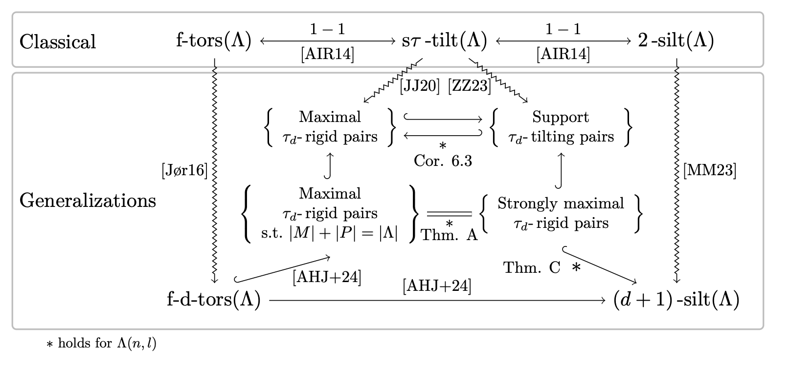

\(\tau_d\)-tilting for Nakayama Algebras
Files with changelog at GitHub.
Last updated:
Home | \(\tau_d\)-rigid pairs | Mutation | Torsion classes
This page is meant to serve as a supplement to the paper \(\tau_d\)-tilting theory for Nakayama algebras Link below (arXiv:2410.19505) [RV24].
- Basic information on \(\tau_d\)-rigid pairs in \(\Lambda(n,l)\) and an interactive AR-quiver to construct \(\tau_d\)-rigid pairs of \(\Lambda(n,l)\) is available here: Construct your own pair.
- Basic information of mutation of summand-maximal \(\tau_d\)-rigid pairs, examples and an interactive AR-quiver for you to mutate can be found here: Mutate pairs.
References
- Jenny August, Johanne Haugland, Karin M Jacobsen, Sondre Kvamme, Yann Palu, and Hipolito Treffinger. Higher torsion classes, \(\tau_d\)-tilting theory, and silting complexes, In preparation (2024+).
- Takahide Adachi, Osamu Iyama, and Idun Reiten. \(\tau\)-tilting theory, Compos. Math. 150 (2014), no.3, 415-452(en), doi:10.1112/S0010437X13007422, MR3187626
- Karin M. Jacobsen and Peter Jørgensen. Maximal \(\tau_d\)-rigid pairs, J. Algebra 546 (2020), 119–134, doi:10.1016/j.jalgebra.2019.10.046, MR4032280
- Luis Martínez and Octavio Mendoza. \(n\)-term silting complexes in \(\mathrm{K}^b(\operatorname{proj}(\Lambda))\), J. Algebra 622 (2023), 98–133, doi:10.1016/j.jalgebra.2023.01.017, MR4547875
- Endre S. Rundsveen and Laertis Vaso. \(\tau_d\)-tilting theory for Nakayama algebras, arXiv preprint arXiv:2410.19505 (2024),
- Panyue Zhou and Bin Zhu, Support τn-tilting pairs, J. Algebra 616 (2023), 193–211, doi:10.1016/j.jalgebra.2022.10.035, MR4512512